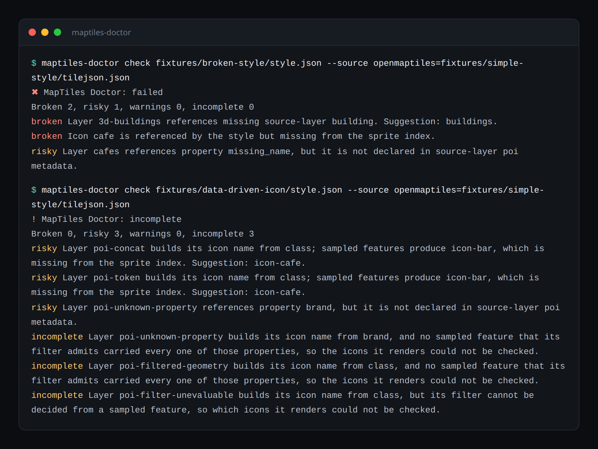
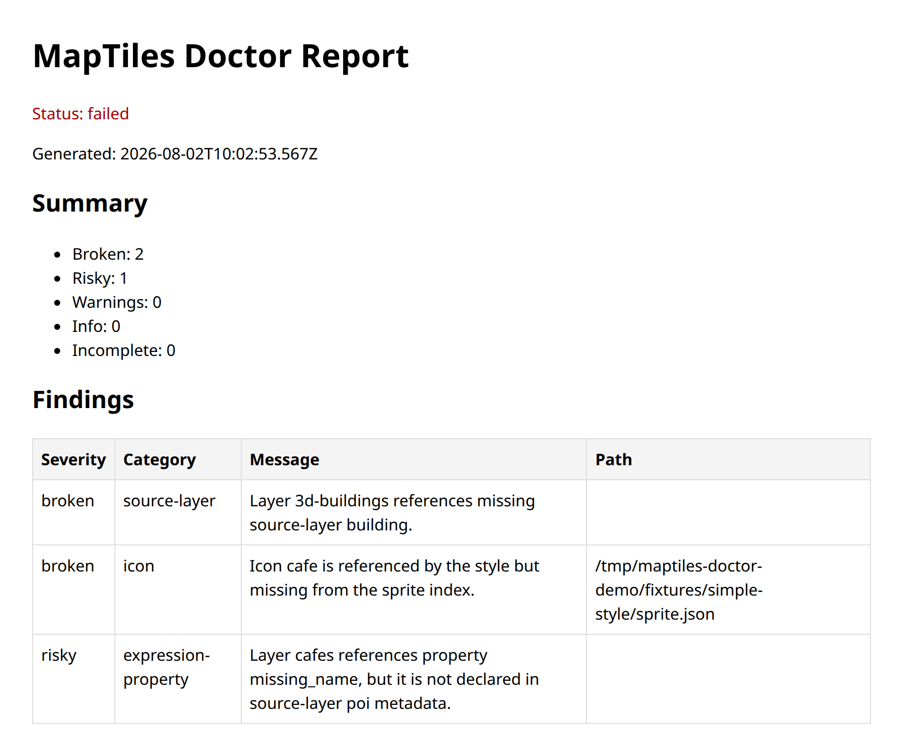

MapTiles Doctor
Validates the contract between a MapLibre/Mapbox style and the PMTiles, MBTiles, TileJSON, sprite, glyph and sampled vector-tile artifacts it actually ships against.
GitHub · npm · Changelog · Contributing
Overview
A style can be valid JSON, pass every schema validator, and still ship a broken map. The
failure is cross-artifact: a source-layer was renamed in the tileset, an
icon left the sprite, a glyph range stopped being served, a property an expression reads
is no longer in the tiles. Nothing in the style is wrong on its own — it just no longer
agrees with what is deployed next to it.
Existing tools check one layer of that stack at a time: style syntax, or vector tile validity, or PMTiles metadata. MapTiles Doctor checks the join between them.
This page is the single source of truth. Behaviour described here is
what the engine in packages/core does. Where the two disagree, the code
is the bug.
Install
Node 24.18.1 or newer in the Node 24 LTS line.
npx maptiles-doctor check style.json --source basemap=world.pmtilesOr install it into a project:
npm install --save-dev maptiles-doctorFrom a checkout
npm 11.11.0 or newer.
npm install
npm run check
npm run check runs audit, typecheck, lint, tests, build, package validation
and a staleness check on the committed Action bundle. See
CONTRIBUTING.md.
CLI
maptiles-doctor check <style> [options] # check a style against its artifacts
maptiles-doctor schema [--output <path>] # print the report JSON Schema
maptiles-doctor --help
maptiles-doctor --version
<style> is a path or a URL. Everything the style declares relatively
— sources, sprites, glyphs — resolves against it.

npm run media:build, not drawn by hand, so it cannot advertise behaviour
the tool no longer has.
Output formats
maptiles-doctor check style.json --source basemap=world.pmtiles --format json
maptiles-doctor check style.json --source basemap=tiles.mbtiles --format sarif
maptiles-doctor check style.json --source basemap=tilejson.json --format github
maptiles-doctor check style.json --format html --output report.html
--format html writes a standalone page with no external assets — the same
one the VS Code extension opens beside the editor.
Flags
| Flag | Default | Effect |
|---|---|---|
--source <id=path> |
— |
Point a style source at a real artifact: a .pmtiles or
.mbtiles file, or a TileJSON file or URL. Repeatable. Overrides
what the style declares. A {z}/{x}/{y} template is not accepted
here — a tile directory is only read when the style's own source declares it in
tiles.
|
--format |
pretty |
pretty, json, sarif, github,
html.
|
--output <path> |
stdout | Write the rendered report to a file. |
--fail-threshold |
broken |
Lowest severity that exits non-zero. |
--timeout-ms |
10000 |
Per-request network timeout. |
--offline |
off | Every remote read becomes an incomplete check. Makes a run deterministic and air-gapped. |
--no-sample-tiles |
sampling on | Use declared metadata only; read no tiles. |
--max-sample-tiles |
3 |
Tile addresses probed per source. |
--sample-at <lon,lat> |
built-in anchors | Sample somewhere specific instead of the built-in populated anchors. |
--sampled-absence |
info |
Severity when only a partial sample says something is absent. info,
warning or risky — never broken.
|
--canary <lon,lat,zoom[,id]> |
— | Render a view in a headless browser. Repeatable. |
--canaries <file> |
— | JSON array of canary definitions. |
--screenshot-dir |
— | Where canary screenshots and diffs are written. |
--baseline-dir |
— |
Directory of <canary-id>.png baselines to compare against.
|
--max-diff-ratio |
0.005 |
Fraction of differing pixels tolerated against a baseline. |
Exit codes
| Code | Meaning |
|---|---|
0 |
Passed, or findings below the fail threshold. |
1 |
Findings at or above the fail threshold. |
2 |
Invalid invocation or runtime error. |
An incomplete run never exits non-zero on its own. It reports what could not be verified rather than claiming a pass.
Evidence ranking
Every finding carries a severity that reflects how strong the evidence behind it is. This is the part of the design worth understanding, because it is what keeps the tool usable on a real style.
| Evidence | Severity | Why |
|---|---|---|
| Declared metadata proves the thing is absent | broken |
A tileset that publishes vector_layers and omits the source-layer
is authoritative.
|
| A sampled feature produces a name the sprite does not hold | risky | Positive evidence the icon is requested, but a partial sample cannot say how much of the map is affected. |
| Only an empty sample says it is absent | info |
Three tiles will not contain a rare feature even in a healthy tileset. Raise
with --sampled-absence.
|
| A sampled feature carries the property | not reported | Observation outranks metadata that omits it; stale metadata is the common case. |
| The artifact could not be read at all | incomplete check | A network failure is not a pass and not a finding. It is an admission. |
Absence from a sample can never be broken. A sample that
did not contain something is not proof that it is missing, so
--sampled-absence broken is rejected rather than honoured.
Overzoom is not a defect
Zoom is judged against the source minzoom only. MapLibre overzooms: above a source's maxzoom it keeps rendering by scaling the deepest tiles it has, which is how a maxzoom-14 basemap draws buildings at z18. A layer drawing above the source maxzoom is normal construction and is never reported. MapLibre does not underzoom, so a layer whose maxzoom falls below the source minzoom can never draw and is broken; one that merely starts below it is risky.
Check reference
| Category | What it catches | Severity |
|---|---|---|
style-spec |
MapLibre style specification errors. | broken |
source |
A layer naming a source the style never declares; a source that cannot be read;
an unused --source override.
|
broken |
source-layer |
A source-layer the tileset does not contain. |
broken |
zoom |
A layer that cannot render because it ends below the source minzoom. | broken |
glyph |
A font stack whose glyph range cannot be fetched. | incomplete |
sprite |
A sprite index that cannot be read. | incomplete |
icon |
An icon-image the sprite does not hold, static or built from
feature data; a namespace prefix naming no declared sprite.
|
broken |
expression-property |
A property an expression reads that the tiles do not carry. | risky |
tile-availability |
A source whose tiles cannot be read at any sampled address. | risky |
visual-canary |
What a real render actually drew. | broken |
Icons built from feature data
An icon-image written as
["concat", "icon-", ["get", "class"]], or with the legacy
"icon-{class}" token syntax, has no name until a feature supplies one. Both
spellings are reduced to the same shape — a sequence of literals and property lookups —
then completed from the sampled tiles, so each name the tiles really produce is checked
against the sprite.
Property combinations are recorded per feature. Taking the distinct values of two properties and crossing them would invent pairs that never occur together, which is a false-positive generator. A template no sampled feature can complete is an incomplete check, not a finding.
Multiple sprites
The array form of sprite declares several sprites and namespaces every icon
reference as <sprite-id>:<icon-name>. Every declared sprite is
read, the prefix selects which index to look in, and a prefix naming no declared sprite
is reported as its own finding rather than as a missing icon — they are different
mistakes with different fixes. Suggestions come back re-namespaced, ready to paste into
the style.
Tile sampling
Sampling is on by default. The checker reads a few real tiles per source and treats the layers and feature properties it observes as evidence, because declared metadata is what drifts.
Tiles are sampled one populated anchor per zoom — London, New York, Tokyo and onwards — rather than at the centre of the source's bounds. The centre of a world tileset is open ocean, and a tile there has no roads, no POIs and no labels, which leaves every check that needs a feature unable to conclude anything. A source whose bounds contain none of the anchors falls back to its own centre, which keeps regional extracts working.
maptiles-doctor check style.json --sample-at 13.405,52.52 # sample over Berlin
maptiles-doctor check style.json --max-sample-tiles 5
maptiles-doctor check style.json --no-sample-tiles # metadata only
maptiles-doctor check style.json --offline # remote reads become incomplete
A source that declares tiles inline is read from the style object rather
than fetched: the only URL it offers is a {z}/{x}/{y} template, and
requesting that verbatim asks a tile server for a tile named {z}. Raster
sources are recognised and not parsed as vector tiles.
Report schema
Schema v1 is a published consumer contract. The checker validates its own output against it before returning, and the equivalent JSON Schema is printable:
maptiles-doctor schema --output maptiles-doctor-report.schema.json| Field | Contents |
|---|---|
schemaVersion |
"1.0". |
status |
passed, failed or incomplete. |
generatedAt |
ISO timestamp. |
artifactHashes |
Hashes of the local files that were checked. |
checks |
Per-check status: style-spec, tile-sample,
source-layer, assets, and
visual-canary when configured.
|
findings |
Severity, category, message, and the layer, source, source-layer, property, path, suggestion and evidence behind it. |
incompleteChecks |
What could not be verified, and why. |
summary |
Counts per severity plus incomplete. |
Severities are broken, risky, warning,
info. A check that never ran produces no entry at all rather than one that
passed.
GitHub Action
- uses: schmidi000/maptiles-doctor/packages/action@v0.1.1
with:
style: style.json
sources: |
basemap=world.pmtiles
fail-threshold: broken
report: maptiles-doctor-report.json
The Action runs a committed self-contained bundle, so a runner needs no install step.
Findings become workflow annotations — broken as errors,
risky and warning as warnings, info and every
incomplete check as notices — and the report path is exposed as a step output.
Regenerate the bundle with npm run bundle:action after changing Action or
core sources; npm run check fails when it is stale.
@v0 tracks the latest 0.x release. Pin the exact
vX.Y.Z tag to avoid picking up a pre-1.0 breaking change.
| Input | Default | Effect |
|---|---|---|
style |
required | Path to the style JSON file. |
sources |
— | Newline-separated id=path-or-url source overrides. |
fail-threshold |
broken |
Severity at or above which the step fails. An unrecognized value is an error, not a silently disabled gate. |
report |
maptiles-doctor-report.json |
Where the JSON report is written. Also the step's report output.
|
offline |
false |
Report remote artifacts as incomplete instead of fetching them. |
skip-tile-sampling |
false |
Check declared metadata only, without reading tiles. |
MBTiles depends on the native better-sqlite3 module, which cannot be
bundled. Inside the Action an MBTiles source reports an incomplete check rather than
passing silently — use PMTiles or TileJSON in CI, or run the CLI from an installed
package. Playwright is external to the bundle for the same reason, so a configured
visual canary also reports an incomplete check.
VS Code extension
The extension runs the same engine against the buffer in the editor, so an unsaved edit
is checked as typed. Styles are checked on open and on save, and diagnostics land on the
offending node — the layer's source-layer, a zoom bound, an
icon-image, or the sources entry that could not be read.
broken maps to Error, risky and warning to
Warning, and info plus every incomplete check to Information, so a network
failure can never read as a pass. Two commands are contributed:
Run MapTiles Doctor and Open Report.
npm run package:vsixVisual canaries
Deterministic checks read metadata and tiles. A canary renders the style with MapLibre GL in headless Chromium and reports what the map actually drew: rendered feature counts, requests that failed, MapLibre errors, and baseline pixel diffs.
maptiles-doctor check style.json \
--canary 13.405,52.52,14,berlin \
--screenshot-dir canaries \
--baseline-dir canaries/baseline
Rendered evidence is ranked the same way sampled evidence is. An HTTP error status is an
artifact answering "no" and is broken. A request
that never completed proves nothing, so it is incomplete and suppresses every
finding that reads what was drawn, because a blocked canary renders an empty map too. A
MapLibre error event or an empty render is risky, and
a layer named in expectLayers that drew nothing is
broken.
A missing baseline is info; drift above
--max-diff-ratio is risky and writes a
diff PNG. Determinism comes from a fixed device pixel ratio,
fadeDuration: 0, a non-interactive map, and waiting for the map's
idle event.
Canaries are off unless one is configured, and need two optional peers. Without them the run reports an incomplete check rather than a pass:
npm install playwright maplibre-gl
npx playwright install chromiumValidation
Fixtures prove the checker does what it was written to do. They cannot prove that a
broken finding corresponds to a map that renders wrong, because the same
process authored the check and the thing it checks. Two harnesses close that gap.
Neither is part of npm run check: both depend on third-party uptime, and a
gate that is red for reasons outside the repo teaches everyone to ignore it.
Real-world corpus
npm run validate:realRuns the built CLI against production styles from four independent providers across three tile schemas. Every finding is either a real contract break shipping in production or a false positive in the checker, and separating those is the point — the false-positive rate is what decides whether the tool is usable.
Seeded failures
npm run validate:seedSeeds ten known contract breaks into a real style, one per check, and counts what the checker notices. Detection is measured as a diff against the unmutated baseline, so a style that already has findings cannot score full marks for noticing nothing. A mutation that cannot be expressed against a style is excluded from the denominator and named in the output rather than silently padding the rate.
Release gate: the seeded prototype must catch at least 8 of 10 intentional contract failures before public launch.
Packages
| Package | Role |
|---|---|
@maptiles-doctor/core |
Style/tile contract engine. All contract logic lives here. |
maptiles-doctor |
CLI. Parses flags and calls the engine. |
@maptiles-doctor/report |
Static HTML and SARIF renderer. |
@maptiles-doctor/action |
GitHub Action wrapper. |
maptiles-doctor-vscode |
VS Code extension. |
The Action and the extension are wrappers around the same engine. Native modules stay out of the Action bundle and are loaded lazily in core, so a missing binding degrades to an incomplete check rather than a crash.
Dependency policy
- Use the newest stable patched versions available at the time of work.
- Pin exact versions.
- Run
npm auditafter dependency changes. - Do not introduce unresolved high or critical CVEs without explicit approval.
- Prefer upgrading a parent package over adding an override for a transitive finding.
"CVE-free" means "no known current audit findings", not a guarantee against undisclosed vulnerabilities.
Roadmap
| Phase | Scope | Status |
|---|---|---|
| 1. Foundation | Workspace, tooling, CI. | done |
| 2. Core engine | Style parsing, PMTiles/MBTiles/TileJSON readers, expression traversal. | done |
| 3. Deterministic checks | Sources, source-layers, zoom, glyphs, sprites, icons, sampled properties. | done |
| 4. CLI and reports | JSON, pretty, SARIF, GitHub annotations, HTML. | done |
| 5. GitHub Action | Bundled wrapper, annotations, report output. | done |
| 6. VS Code extension | Buffer diagnostics, commands, report view. | done |
| 7. Visual canaries | Headless rendering, feature counts, baseline diffs. | done |
| 8. Public release | Open source on GitHub, packages on npm, documentation on Pages. | done |
| 9. Hosted tier | Report history, baselines, GitHub App, billing. | gated |
The hosted tier is deliberately gated on evidence of repeat CLI and CI usage. The free CLI is the product until there is reason to believe someone will pay for history of it.